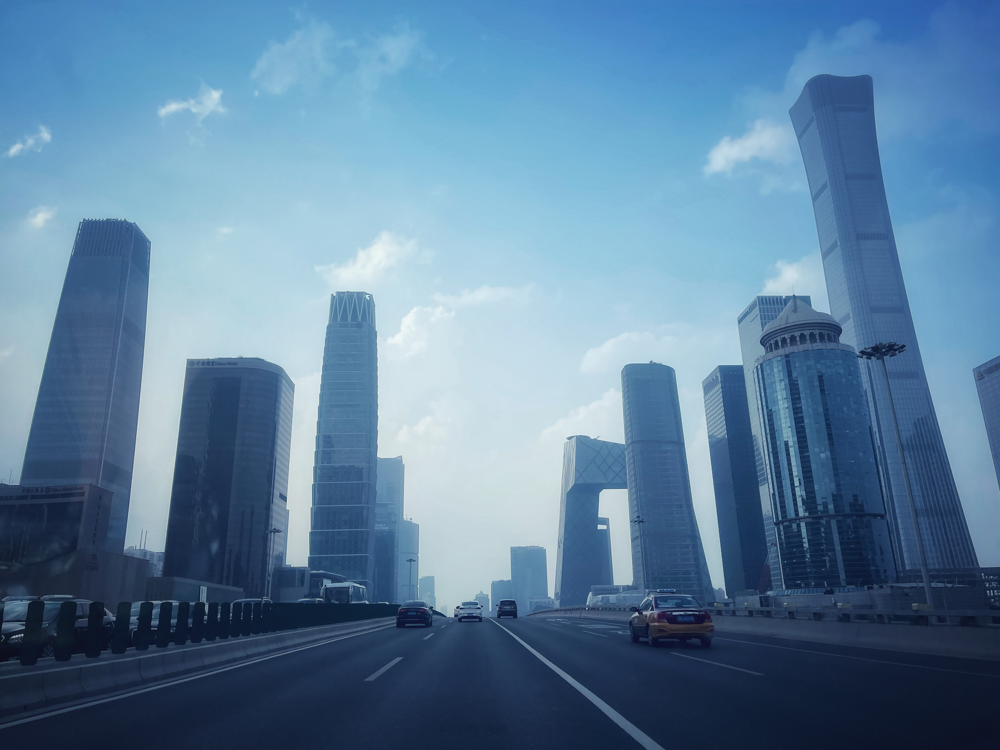
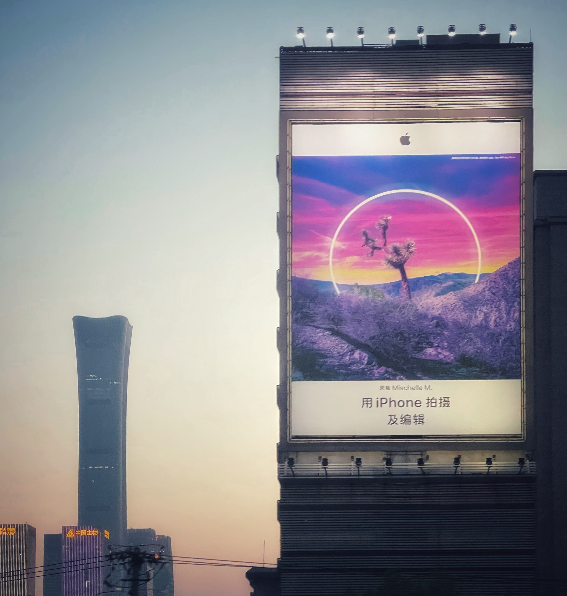
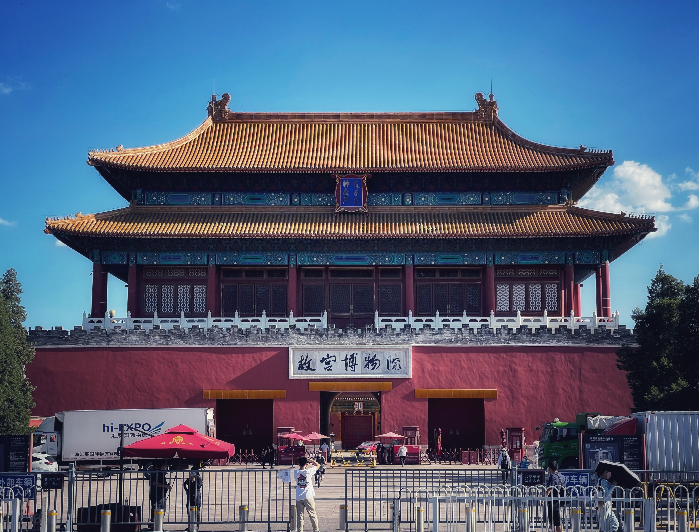
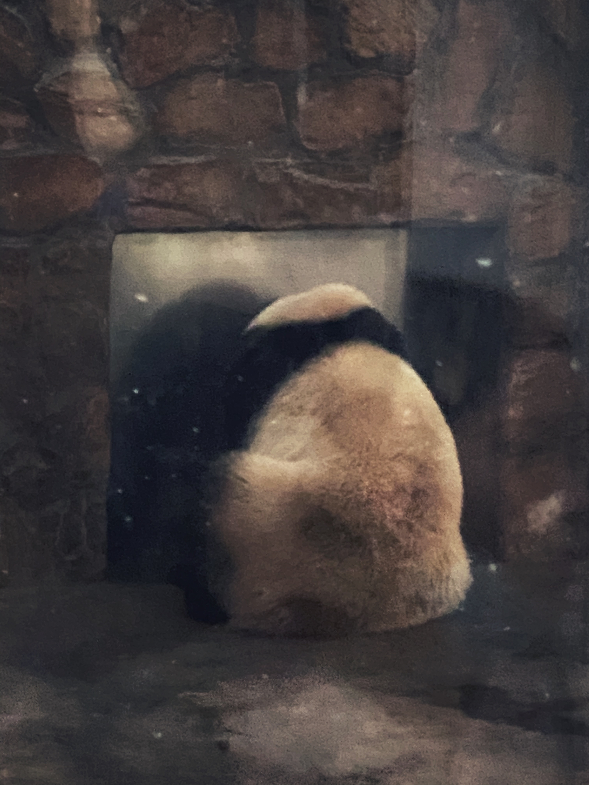
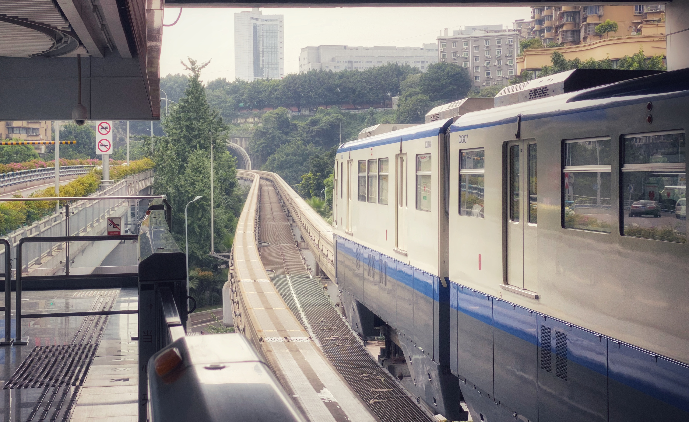
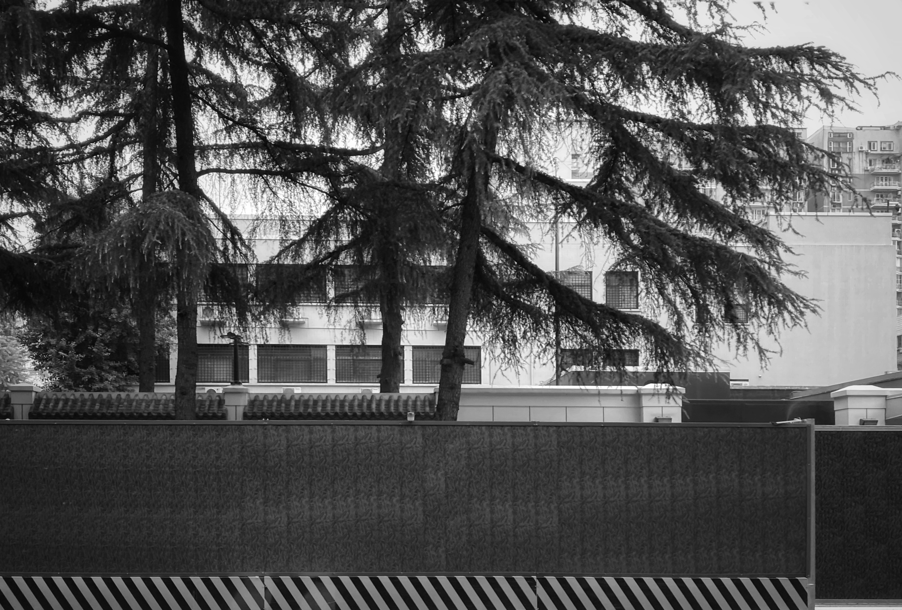
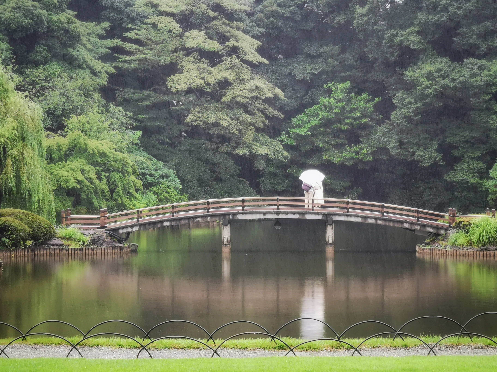

Welcome to My Personal Site
I am a sophomore at the University of Michigan and my major is CS. I enjoy traveling and photography and I have traveled to many countries and regions. I love different cultures, and I like to record different human and natural landscapes with my camera. I have put some of my photos and my thoughts on this website.
Beijing is the capital of China and the largest city in China. It is the center of the country's political, economic, and cultural development. It is the world's largest metropolis.
Below are six photos of the city of Beijing. The first three photos are the city of Beijing from the perspective of the CBD. The following two photos are the city of Beijing from the perspective of the ForbiddenCity. The last photo is the first and biggest Apple Store in China.
Due to the pandemic, it is now difficult to enter China from foreign countries and travel visas into China are not yet open. As an international student in the U.S., it is also very difficult to return to China. If we fly from Los Angeles to Shanghai, we need to pay for our own quarantine in Los Angeles for 7 days, with multiple Covid tests during that time, and up to a month after we return home
View of CBD skyscraper from CBD Bridge. The pictures include China Zun and the main building of China Central Television
Look at the tallest building China Zun in Beijing from a distance

China Zun And a giant apple poster
A panoramic view of the Forbidden City from Jingshan Park

Entrance if Forbidden City Museum. You can see the Words Palace Museum
The refurbished first Apple store in China. The Apple store was bustling with customers

Chengdu is the capital of China's Sichuan province, which is famous worldwide for its giant pandas. The following picture was taken by me at the giant panda breeding base
Chongqing is a city next to Sichuan, because of its steep terrain is called the mountain city, this is my shot of Chongqing city rail transit
The Chengdu Consulate, the main U.S. consulate in northwest China, has closed. The image shows the closed U.S. Consulate in Chengdu.
Tokyo is the capital of Japan, and I was fascinated by its prosperity and ancient culture. This picture was taken in Shinjuku Gyoen.
